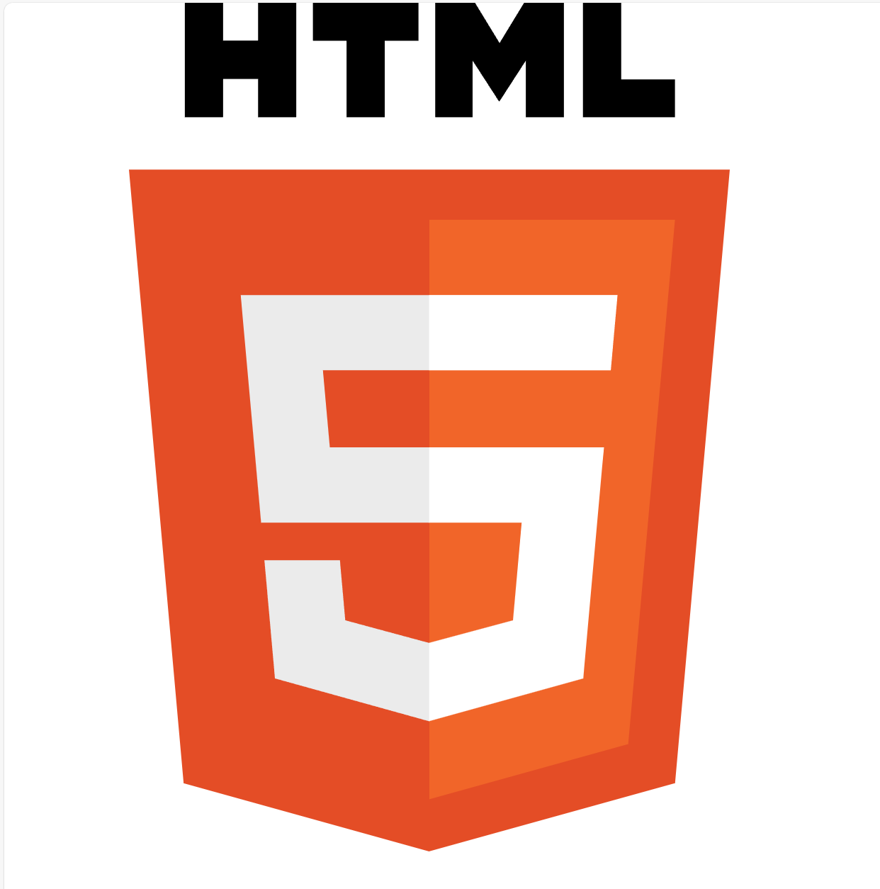
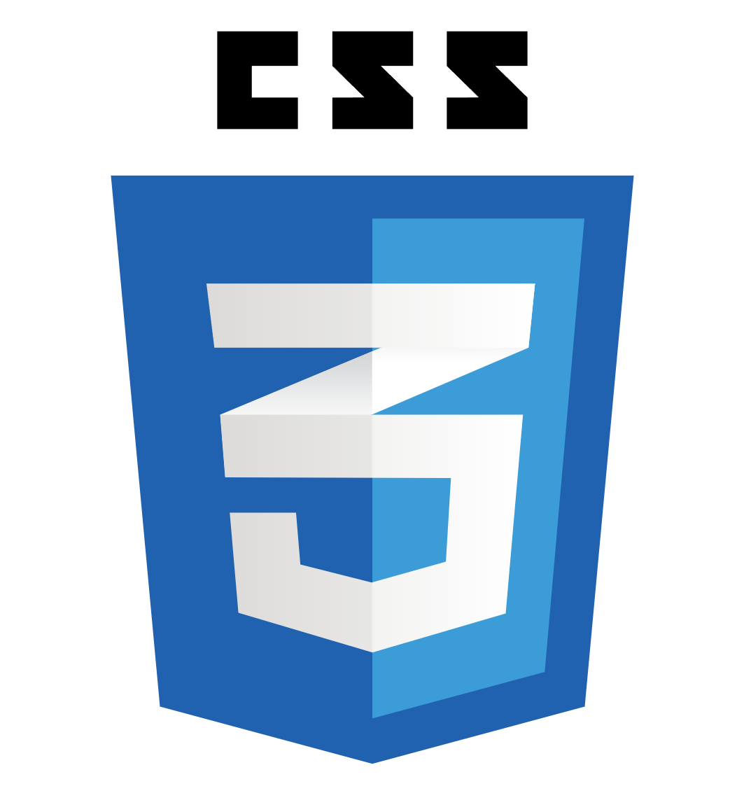
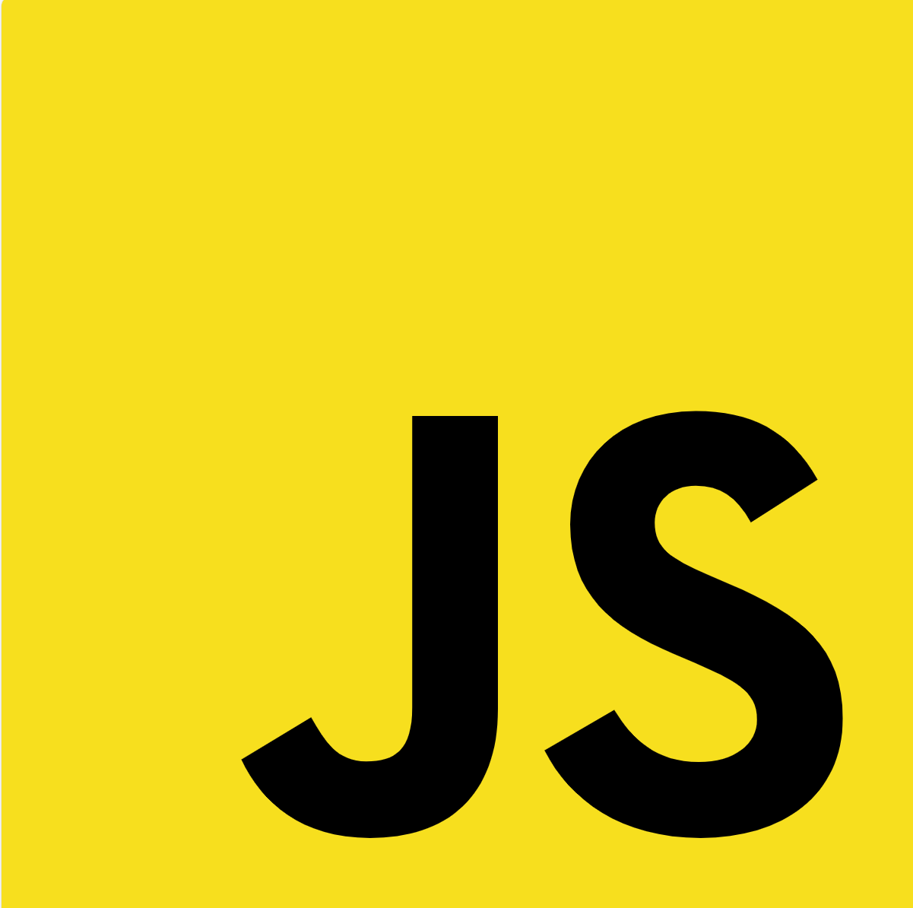

<!DOCTYPE html>
<html lang="ja">
  <head>
    <meta charset="UTF-8" />
    <link rel="stylesheet" href="css/reset.css" />
    <link rel="preconnect" href="https://fonts.gstatic.com" />
    <link rel="preconnect" href="https://fonts.gstatic.com" crossorigin />

    <link
      rel="stylesheet"
      href="https://fonts.googleapis.com/css2?family=Josefin+Sans&family=Sawarabi+Mincho&display=swap"
    />
    <link
      href="https://fonts.googleapis.com/css2?family=Noto+Sans+JP:wght@100..900&display=swap"
      rel="stylesheet"
    />
    <link rel="stylesheet" href="css/style.css" />
    <script src="main.js"></script>
    <title>profile</title>
  </head>
</html>
<body>
  <header class="headertag" id="toppage">
    <div class="innerWrap">
      <nav class="navmain">
        <ul class="Josefin">
          <li><a class="nav1" href="#toppage">Top</a></li>
          <li><a class="nav2" href="#contactarea">Contact</a></li>
        </ul>
      </nav>

      <h1>It's never too late</h1>
      <p class="text_translate">遅すぎることはない。今からでも始めよう。</p>

      <p class="text_explanation">
        新しいことに挑戦するのが好きで何でもまずはやってみるところから始めます。<br />
        その際に意識している言葉が「It's never too
        late」であり、私のモットーです。
      </p>
    </div>
    <div class="bgcolor"></div>
  </header>
</body>
<main>
  <section class="myselfSec" id="introducearea">
    <div class="innerWrap">
      <h2 class="Josefin">Profile</h2>
      <div class="layoutWrap">
        <div>
          
        </div>
        <div class="myselfDetails">
          <h3 class="name">井上　朋紀</h3>
          <p class="ruby">Inoue Tomonori</p>
          <p class="text">
            学生時代は機械工学を7年間学んできました。<br />
            卒業後は自動車部品メーカーにて設備改善を行うエンジニアとして活躍。<br />
            毎日、生産現場を支えています。<br />
            <br />
            プライベートではオンライン学習プラットフォームを活用し<br />
            html・css・javascriptを学んでいます。<br />
          </p>
        </div>
      </div>
    </div>
  </section>
  <section class="skillsSec" id="introducearea">
    <div class="innerWrap">
      <h2 class="Josefin">Skills</h2>
      <div class="skillmenu">
        <div class="circle">
          <div class="circle-inner">
            
          </div>
        </div>

        <div class="circle">
          <div class="circle-inner">
            
          </div>
        </div>

        <div class="circle">
          <div class="circle-inner">
            
          </div>
        </div>
      </div>
    </div>
  </section>
  <section class="backgroundSec" id="backgroundarea">
    <div class="innerWrap">
      <h2 class="Josefin">Background</h2>
      <div class="kosen">
        <div class="subject">
          <h3 class="text">新居浜工業高等専門学校　機械工学科　</h3>
          <h3 class="period">2013年 4月　ー　2018年 3月</h3>
        </div>

        <p class="explanation">
          中学生の頃の得意科目は理数系の科目全般。エンジニアを夢見て工業高等専門学校に入学しました。<br />
          機械工学を専攻し、機械工学の4大力学である
          機械力学・材料力学・熱力学・流体力学を学び修得しました。
        </p>
      </div>
      <div class="studyabroad">
        <div class="subject">
          <h3 class="text">カナダ　バンクーバーへの語学留学</h3>
          <h3 class="period">2018年 4月　ー　2019年 3月</h3>
        </div>

        <p class="explanation">
          高専3年生のときに短期でオーストラリア留学を経験。英語を使って母国語の異なる人々と会話をする楽しさを知りました。<br />
          長期の留学で英語力はさらに伸ばせると思い、カナダのバンクーバーに1年間留学をしました。<br />
          覚えた単語をすぐに実践で使ったり、恥ずかしがらずに誰にでも積極的に話かけるようにしたことで、<br />
          日常生活を不自由なく送ることができる程度の英語力を身に付けました。
        </p>
      </div>
      <div class="advancedcourse">
        <div class="subject">
          <h3 class="text">
            新居浜工業高等専門学校　生産工学専攻 機械工学コース
          </h3>
          <h3 class="period">2019年 4月　ー　2021年 3月</h3>
        </div>

        <p class="explanation">
          高専5年間で学んできたモノづくりの知識を活かして、モノを実際に動かす知識や技術を身に着けたいと思い専攻科に進学しました。<br />
          チームでカブトムシ型ロボットを開発する授業があり、私はロボットの頭部を担当し角を上下させる機構を設計しました。<br />
          本授業を通して設計能力の向上だけでなく、メンバーと密にコミュニケーションを取りながら進捗を把握し、<br />
          協力し合いながら計画通りにプロジェクトを進める力も身に付けることができました。
        </p>
      </div>
      <div class="work">
        <div class="subject">
          <h3 class="text">日本精工株式会社</h3>
          <h3 class="period">2021年 4月　ー　現在</h3>
        </div>

        <p class="explanation">
          専攻科のロボット開発の授業にて使用したベアリングという部品に興味を持ち、ベアリングメーカーへ就職。<br />
          自動車の車軸周りに使用されているハブベアリングを製造している工場で、設備のトラブル対応および設備改善を主に行っています。<br />
          トラブル対応では設備の異常を把握し、問題を引き起こしている要因を正確に突き止め解決する力が身に付きました。<br />
          設備改善ではAutoCADという図面を描く専用のソフトを用いて治工具や部品の設計を行っており、<br />
          誰もが見やすい図面を描くスキルが身に付きました。
        </p>
      </div>
    </div>
  </section>

  <section class="strengthSec" id="strengtharea">
    <div class="innerWrap">
      <h2 class="Josefin">Strength</h2>
      <div class="strengthname">
        <h4>提案力</h4>
        <h4>関係性構築力</h4>
        <h4>挑戦力</h4>
      </div>
      <div class="strengthexplanation">
        <ul>
          <li>
            現場の声にしっかり耳を傾けてニーズを正確<br />
            に捉え、最適な改善提案を行っています。<br />
            また、言われたことだけを行うのではなく<br />
            改善に「付加価値」を持たせることを常に<br />
            意識しています。
          </li>

          <li class="center">
            社内外の方から親しみやすいと言われます。<br />
            マスクが当たり前のコロナ禍に入社したので<br />
            口元が隠れていても笑顔が伝わるように<br />
            「笑声」を意識して会話しています。<br />
            その結果、相手に明るい印象を与えること<br />
            ができ、良い人間関係を構築できています。<br />
          </li>

          <li>
            常に新しい事にチャレンジしています。<br />
            学生の頃に経験した海外留学ではアルバイト<br />
            としてレストランでお皿洗いを担当していま<br />
            した。しかし、英語を話す機会が少なかった<br />
            ため、さらなる英語力向上を目指して日本<br />
            でも未経験であったキッチンを自ら担当し、<br />
            日常生活では支障のない程度の英語力を<br />
            身に付けました。<br />
          </li>
        </ul>
      </div>
    </div>
  </section>
  <section class="contactSec" id="contactarea">
    <footer>
      <p><small>© Tomonori Inoue</small></p>
    </footer>
  </section>
</main>
